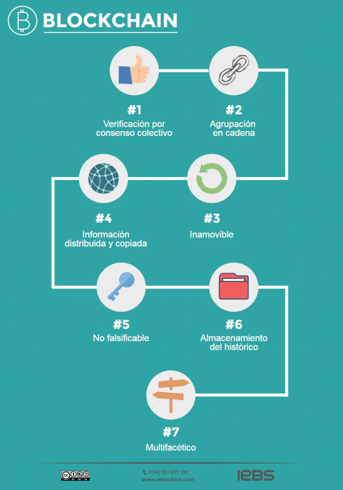

Bitcoin es una moneda digital que permite enviar y recibir dinero a través de Internet. A diferencia del dinero tradicional, no depende de un banco central ni de una entidad que controle todas sus operaciones. Su funcionamiento se basa en una red de computadores conectados en diferentes partes del mundo.
Esta criptomoneda fue presentada en el año 2008 por una persona o grupo que utilizó el seudónimo de Satoshi Nakamoto. En enero de 2009 comenzó a funcionar la red Bitcoin, dando inicio a una nueva forma de realizar transacciones digitales.
Además de ser una moneda digital, Bitcoin representa un avance importante en el desarrollo de la tecnología financiera. Su creación permitió demostrar que era posible realizar transferencias digitales mediante una red descentralizada, en la que diferentes computadores participan en la verificación de las operaciones.
Una de sus características principales es que no existe una sola entidad encargada de controlar toda la red. Esto significa que su funcionamiento depende de la participación de muchos usuarios y computadores que ayudan a mantener actualizado un registro de las transacciones realizadas.
Desde su aparición, Bitcoin ha pasado por diferentes etapas de desarrollo. Al principio era conocido por un grupo reducido de personas interesadas en la informática, pero con el tiempo comenzó a llamar la atención de usuarios de distintos países, empresas y medios de comunicación.
Su crecimiento también ha generado debates sobre el futuro del dinero, la seguridad de las transacciones digitales y la importancia de las nuevas tecnologías. Por esta razón, Bitcoin se ha convertido en un tema importante para comprender los cambios que están ocurriendo en el mundo digital.
BITCOIN: UNA NUEVA FORMA DE DINERO DIGITAL
Una de las tecnologías más importantes de Bitcoin es la cadena de bloques, también conocida como blockchain. Esta funciona como un registro digital público donde se almacenan las transacciones realizadas. La información es compartida por muchos computadores de la red, lo que permite verificar las operaciones sin depender de una sola institución.

BLOCKCHAIN: LA BASE TECNOLÓGICA DE BITCOIN
Con el paso de los años, Bitcoin comenzó a ser conocido en diferentes países y llamó la atención de personas, empresas y organizaciones interesadas en las nuevas tecnologías. Su crecimiento lo convirtió en una de las criptomonedas más reconocidas del mundo.
Sin embargo, Bitcoin también tiene aspectos que deben analizarse. Su valor puede cambiar mucho en poco tiempo y su uso requiere conocimientos sobre seguridad digital. Por eso es importante conocer tanto sus características como sus ventajas y desventajas.
En este proyecto estudiaremos qué es Bitcoin, cómo fue creado, cómo funciona, cuál ha sido su crecimiento a través de los años y qué impacto ha tenido en el mundo de la tecnología y la economía.